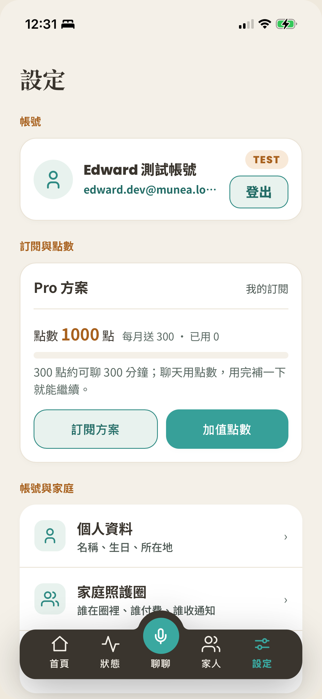

為一家人而做的健康陪伴，
從爸媽開始。
Munea 沐寧：住在手機裡、有真人臉與真人聲音的 AI 健康陪伴照護管家。本文件是團隊與前期合作夥伴快速看懂產品的單一事實來源（SSOT）——對齊產品方向、市場座標與技術輪廓，支援前期夥伴招募；不是募資簡報。
執行摘要
Munea 是「全家人的健康陪伴照護平台」：以自研即時語音＋真人臉技術做出「像家人一樣陪伴」的 AI 管家。現階段以高齡照護為灘頭堡——那裡痛點最深、付費者最明確、政策順風最強；站穩後沿家庭健康圈向全家人的身心照護擴展。
一頁看懂：機會 × 能力 × 時機
- 機會：照護人力缺口是結構性且無解（台 2028 缺 6.7 萬、日 2040 缺 57 萬）——AI 陪伴不是取代人，是接住人力永遠補不上的離峰與夜間。
- 能力：兩個自研引擎（即時語音＋真人臉／三腦照護智慧）疊出「像家人一樣陪伴、出事有人接住」——技術、產品、信任三力同時成立，競品各缺一角。
- 時機：2026 是政策與監管的雙重拐點——台灣補貼窗口大開（長照 3.0／輔具租賃／機構獎勵），全球監管把「安全網」變成合規門檻，我們天生站在對的一側。
- 打法：品牌講「全家人的在乎關係」（不貼年齡標籤）、執行聚焦「幫在外地的子女守住爸媽」——先打贏高齡灘頭堡、拿到真數據，再沿家庭圈擴展全家身心照護（詳第 8 章）。
市場分析：台灣 · 日本 · 北美
三地共用同一個結構：高齡化加速 × 照護人力補不上 × 政府用補貼推科技解方。台灣是主場（超高齡元年＋2026 政策密集開窗）、日本是下一站（付費文化已驗證 25 年）、北美是對標（監管正把「安全網」變成法定門檻——恰是我們天生的壁壘）。
台灣：主場——超高齡元年 × 政策密集窗口
洞見：台灣在 2025 年底正式跨入超高齡社會——這不是預測，是已發生的事實。而 2026 下半年正是政策最密集的窗口期：長照 3.0 三階段全數啟動、智慧輔具租賃 7 月上路、政府 62.5 億投入獨居長者服務。
政策順風（2026 下半年密集開窗）
- 長照 3.0 上路（行政院 2025-12-31 核定）：八大目標明列「導入智慧照顧」；長照資源與外籍看護不再互斥——家庭同時用外籍看護＋AI 陪伴不再有政策障礙。（遠見／衛福部）
- 智慧輔具全租賃（2026-07-01）：安全看視類（EI01–EI05）與 Munea 守護能力高度對口；紅線＝只講「照顧安全／看視／提醒」、不做醫療宣稱。
- 住宿機構品質獎勵（2024–2027）：含「智慧輔助照顧科技」指標，每家機構每年最高 101–240 萬元獎勵——機構導入 Munea 有政府出的理由。（衛福部 2024-09 公告）
- 獨居長者國家行動：行政院 2026-03 拍板 62.5 億元、年內完成全台 75+ 獨居長者訪查並分 4 級追蹤——與 Munea 的看顧能力同方向。（TVBS 2026-03）
日本：下一站——全球最高齡的「見守り」市場
洞見：日本是全球最高齡＋「子女付費給爸媽用」文化最成熟的市場。Munea 的機會不在開新賽道，而在用「會話 AI ＋ 家庭圈 ＋ 危機轉介」的組合，卡進「見守り（遠距看顧）」與「企業防介護離職福利」兩個已被驗證願意付費、但現有玩家都只做到單點的位置。
- 「買的人 vs 用的人」分離已被驗證 25 年：象印「みまもりほっとライン」（IoT 熱水瓶通知子女）自 2001 年運營至今、累計約 29 萬件——子女決策付費、長輩使用的模式正是 Munea 家庭健康圈的核心假設，在日本早有成熟先例。（ITmedia）
- 企業端有法定順風：2025 年 4 月起日本企業依法須建置「介護與工作兩立支援」機制——Munea 企業席次在日本有現成採購理由（法遵＋防介護離職，年約 10.6 萬人因照護家人離職）。（經產省）
- 誠實揭露：「見守りサービス」市場規模各調查機構口徑差異達 3 倍（約 100–400 億日圓區間）——市場邊界未定型，本身就說明組合式卡位仍有空間。（富士經濟／矢野經濟／Seed Planning 並陳）
- 認知症數據用最新版：厚勞省 2025 年最新推計 471.6 萬人（舊制「700 萬人時代」已因調查方法改進下修約 3 成——對日方溝通引新數字，避免被點出資料過時）。
北美：成熟對標——痛點惡化中、資本已進場、監管正收緊
洞見：北美不是藍海，是「痛點巨大、資本進場、但沒人做對」的市場。孤獨與照護者過勞兩個結構性壓力都在惡化，AI 陪伴資本已密集進場，而 2026 年起的監管收緊正把「安全網」從加分項變成法定要求——恰好是 Munea 天生內建的能力。
市場規模與資本動向
- AgeTech 大盤：50+ 全品類廣義估算達 2 兆美元；銀髮輔助科技細分 2026 年約 301 億美元、2034 年估 725 億美元（CAGR 11.5%）。（Global Venturing／MarketIntelo）
- AI 陪伴細分最快：長者陪伴機器人子類 2026 約 12.5 億美元、CAGR 22%；廣義 AI Companion 市場 CAGR 31–37%。（360iResearch 等，2026；各機構估算差異大、引用時標明機構）
- 資本已進場：2024 年 AgeTech 創投私募 39 億美元創新高。（TheGerontechnologist 2025）
- 企業福利趨勢：整合式家庭照顧福利（LSA）使用率 89%、遠高於獨立方案的 46%——Munea 企業席次要包進「family care benefit」大傘賣，不要單獨賣「銀髮陪伴」。（2026 HR 產業報告）
監管風向：安全網正在變成法律要求
用戶分析：三種人的痛，一套解方
三種用戶的痛都有官方數據撐著，不是想像的 persona。最關鍵的結構性事實：買的人（子女／機構／企業）與用的人（長輩）是分開的——行銷說服買的人、產品體驗留住用的人，Munea 的家庭健康圈正是為這個分離而生。
長輩本人：孤獨是真的，門檻也是真的
- 痛：被看見、被記得的需求沒人接（獨居風險 118 萬 vs 列冊 5.5 萬的巨大缺口）→ Munea 接法：每天主動開口找長輩說話、跨通話記憶「上次你說膝蓋痛，好點沒」。
- 痛：科技門檻——超過 3 個步驟多數第 2 週就棄用（內部用戶研究 2026-06）→ 接法：語音優先、被動觸發、大字高對比單一主按鈕，三件同時成立。
- 痛：抗拒被「老人化」——「她又沒老」→ 接法：全產品不出現「銀髮／老人」標籤，按關係講話，是「記得你的人」不是「照顧你的工具」。
遠距子女：付費的人，買的是「安心的證據」
- 痛：沒空天天打電話的內疚＋「今天不知道媽好不好」的焦慮 → 接法：Munea 的每日主動陪伴＝子女沒空打的那通電話被 AI 接住；儀表板把焦慮變成可視化的安心。
- 痛：出事怕來不及（獨居失聯要走里長→社會局→警方→破門，以「天」計）→ 接法：危機偵測分級通知，把滯後從「天」往「分鐘」壓。
機構與企業：買的是人力與可量化的照顧
- 機構痛：87.5% 長照機構長期缺工、25.7% 嚴重缺工；照服員 69% 已逾 45 歲、僅 2.4% 低於 25 歲（報導者／Ankecare 2025-11）→ 接法：24 小時不受班表限制的主動關懷補離峰空窗；家屬儀表板把「報平安電話」自動化。
- 企業痛：ESG 社會構面要可量化的員工照顧；台灣 2026 起以「ESG 評估」取代公司治理評估 → 接法：席次使用率／關懷次數／滿意度直接餵永續報告書（此為策略假設，待首批 B2B 試辦回填真數據——誠實標註）。
- 2026 行為趨勢雙曲線：長者 AI 陪伴接受度與正向訊號在升（Frontiers 2026-05 橫斷面研究；ElliQ 紐約州試辦 95% 使用者自陳孤獨感下降——方案回報、非對照試驗）、但情感依賴監管同步收緊（中國 2026-07 新規、加州 SB 243）——做得好是藍海，做不好是紅線，中間地帶很窄；Munea 的安全網設計把自己放在安全的一側。
競品分析：三地直接與潛在對手
北美：五種形態，各缺一角
| 競品 | 定位／模式 | 強項 | 缺的那一角 | 威脅 |
|---|---|---|---|---|
| Addison Care | 3D 頭像照護助理，走美國醫療保險給付通路 | 唯一同走「頭像＋語音」路線；已入給付代碼 | 定位醫療監測非情感陪伴；零亞洲家庭文化理解 | 🔴 高 |
| Sensi.ai | 居家聲學監測（B2B 機構），募資 $98M+、年營收 +400% | 資金最猛、機構通路強 | 純背景監測，沒有對話與陪伴 | 🟠 中高 |
| ElliQ | 桌上型陪伴機器人，硬體 $249＋月費 $30–40；已入州 Medicaid | 品牌先行者、政府通路 | 無真人臉、無視訊，互動偏提醒與遊戲 | 🟡 中 |
| care.coach | 真人客服操作虛擬頭像，$199–249/月 | 有真人溫度、合規完備 | 人力密集無法規模化，成本隨用戶線性增加 | 🟡 中 |
| Replika / Character.AI | 通用情感陪伴（年輕族群），Replika 4,000 萬+ 用戶 | 對話黏著度 | 無安全網——未成年訴訟、罰款、被迫轉型 | 🟢 不同賽道 |
| Amazon Alexa Together | 遠端照護訂閱 | 生態系裝機量 | 2025 已停售——證明「純監控無陪伴」站不住 | ⚪ 已退場（盯 Alexa+ 回馬槍） |
北美結論：沒有一家同時具備「真人臉真聲 × 安全網 × 家庭圈 × 亞洲家庭文化理解」。若未來進北美，第一個切入點是北美亞裔／華語長者社群——文化理解優勢最大化的灘頭堡，而非直接對撞主流市場。
台灣：本土競品與潛在對手
| 競品 | 定位 | 強項 | 缺的那一角 | 威脅 |
|---|---|---|---|---|
| 智齡科技 Jubo | 長照機構效率化 SaaS（電子病歷／交班／AI 分析） | 台灣最大：官網自陳 2,700+ 機構、33 萬專業使用者（比外界舊報導的 1,200 家更成熟）、募資 6.2 億 | 不做 C 端家庭陪伴、不對長者本人互動——但機構通路綁得深，我們進機構要回答「跟既有系統怎麼共存」 | 🟢 低（互補多於競爭、觀察其家屬 App 動向） |
| 上緯智聯 TaiiBot | 硬體陪伴機器人（語音互動＋跌倒偵測） | 上市集團資本；2026-03 開全台首座展示中心 | 綁硬體、部署成本高、尚無公開導入數字 | 🟡 中（資本是變數，盯下半年導入速度） |
| 工研院 AMIBO | 陪伴裝置＋子女手機連動（概念與 Munea 最像） | 研究能量強 | 仍在技轉前期、未上市 | 🟡 中（潛在） |
| Osmile／GPS 手錶類 | 定位＋SOS＋跌倒偵測（NT$4,999–16,999） | 通路廣、價格親民 | 純硬體定位，零對話零陪伴 | 🟢 低中（會分食輔具租賃通路排隊順位） |
| 愛長照／優照護 | 長照資源媒合平台 | 用戶基數大、信任度高 | 是「長照版黃頁」，非 AI 陪伴 | 🟢 低（潛在導流合作對象） |
| 電信三雄 | 樂齡資費＋遠距醫療布局 | 數百萬銀髮用戶關係＋通路 | 尚無 C 端陪伴型產品 | 🟠 中高（潛在——最有資格殺進來的巨頭） |
台灣結論：「軟體 × 情感陪伴 × 安全整合」這個象限，台灣本土目前沒有成熟玩家——機構管理有人做（Jubo）、硬體看視有人做（Osmile／TaiiBot）、資源媒合有人做（愛長照），但「住在手機裡、會陪爸媽說話、出事會叫人」的位置是空的。國際對手（ElliQ／Hyodol）查證均無台灣代理引進計畫，語言與硬體成本是天然屏障。
日本：見守り市場的既有玩家
| 競品 | 定位／模式 | 價格帶 | 現況（2026 上半年） | 威脅 |
|---|---|---|---|---|
| ElliQ × 兼松 | AI 陪伴機器人進軍日本：健康管理＋防孤獨＋見守り一體 | 美國現價：開通費 $249＋月費 $39–59 | 2025/09 官宣出資、原目標 2026 春上市；2026-03 兼松官方仍稱「檢討中」＝上市日期未定。高可信威脅、時間表不確定 | 🔴 高（盯上市進度） |
| チカク「いっしょ。」 | AI 角色 App＋家人見守報告＋認知症風險自測——概念與 Munea 最接近 | 月額 ¥9,800 | 2026/03 上線、4 月加認知症自測 | 🔴 高 |
| Starley「茶の間Cotomo」 | AI 每日定時來電對話→摘要給家人；地方政府＋東北大學合作驗證 | 月額 ¥2,980 起 | 2024/12 上線、累計募資約 10 億円 | 🟡 中 |
| LOVOT／PALRO | 實體陪伴／介護機器人（PALRO 已入 1,300+ 機構） | 本體 ¥348,000–577,500＋月費 | 高單價硬體、對話力弱於新世代 AI | 🟡 中 |
| Sony aibo | 寵物陪伴機器人 | — | 2026/06 官宣停售現行機型——純硬體陪伴模式走弱的直接證據 | 🟢 警訊型參考 |
- 反直覺發現：真正跑出規模與募資的（Starley 10 億円、チカク 15 億円）都是純軟體＋低價訂閱＋家人共享報告模式，而非高單價機器人——對 App 形態的 Munea 是有利訊號。
- 差異化必打深度：日本「安否確認」已有便宜又可信的老牌解法（月費 ¥1,680–3,300 級）——Munea 要贏在既有玩家做不到的「真人臉即時互動＋長期記憶＋危機轉介」，不要去打基本看顧。
- 切入節奏：搶在 ElliQ 鋪貨前建立信任錨點；走「介護科技補助 4/5」與「企業介護兩立法定義務」兩個 2025–26 剛開的政策窗；行銷措辭避開「診斷／篩檢」以免觸發日本醫材認定（薬機法）。
產品分析：核心價值 · 技術力 · 差異化
Munea 的護城河不是單一功能，而是三件難事同時成立：像真人的即時互動（技術力）× 記得你、懂分寸的照護智慧（產品力）× 出事有人接住的安全網（信任力）。三者疊加後，市面上沒有直接等價品。
核心價值：把「被記得、被陪著、被接住」做成產品
市場上大家都在教 AI 回答問題，我們選擇教 AI 關心人。Munea 的核心價值主張只有一句：讓每個家庭都有一位記得全家人、聽得出情緒、出事會叫人的健康管家。
被記得
長期記憶讓每次對話從上次聊到的地方接著聊；提過的用藥、回診、喜好都替你記著。
被陪著
會動的真人臉、真人般的聲音、即時你來我往——不是冷冰冰的語音框，是「有人在」的臨場感。
被接住
危機語言即時辨識、風險分級、轉介 113／119／1925 與家人通知——陪伴之外，出事有人接。
技術力：兩個自研引擎撐起一個管家
- 即時語音＋真人臉引擎（Realtime Voice + Avatar）：對話當下即時生成的臉與聲音，嘴型跟著聲音、表情跟著語氣，可被打斷、可插話——台灣首創將此互動水準帶進家庭健康照護場景。
- 健康管家智慧核心（FamilyWellness AI）:三顆分工明確的 AI 腦協同（即時對話／記憶感知／安全守門），安全具最高否決權、決策留痕——不是單一聊天機器人的套殼。
- 台灣在地化：台灣繁體中文與台語原生、台灣腔語音、在地情境（回診、健保、節氣飲食）理解。
差異化：跟三類對手比，各贏在哪
| 對手類型 | 他們的強項 | 他們做不到的 | Munea 的位置 |
|---|---|---|---|
| 陪伴機器人／硬體 | 實體存在感 | 價格高、佔空間、中文弱、更新慢 | 純軟體住進手機，價格是硬體的零頭，全家都能裝 |
| 情感陪伴 App | 對話黏著度 | 缺安全網——已有情感依賴與自傷爭議案例 | 陪伴＋危機轉介安全網是核心架構，不是事後補丁 |
| 機構管理 SaaS | 後台效率化 | 不做長者本人的陪伴、不對接家屬情緒 | 直接服務長輩與家屬，機構後台是加值不是本體 |
產品功能：聊聊 · 健康數據 · 全家健康圈
五個分頁、一個閉環：聊聊建立關係與情緒訊號 → 健康把提醒與數據看住 → 家人把觀察變成家屬的安心。用得越久，管家越懂這家人，換掉的成本越高。



聊聊：跟她講話，像視訊一位家人
- 即時視訊對話：真人臉即時生成、嘴型對聲音、想插話就插話；六款角色（擬真女／男、插畫、動物）可換，暱稱可自訂。
- 有分寸的關係：剛認識有禮貌、處久了更親近；語氣隨長輩情緒調整，不硬要開朗。
- 記憶接續：這次從上次聊到的地方繼續；聊完自動萃取「值得記住的事」進長期記憶。
健康數據：用藥、回診、生理數據，都替你看著
- 提醒做成對話：吃藥、回診不是冷冰冰的推播，是管家在對話裡自然提起、確認、記錄。
- 數據同步:自行量測與裝置（如手機健康資料）同步，趨勢與異常視覺化呈現。
- 異常察覺：對話語意＋數據訊號交叉判讀，發現不對勁分級通知家人；醫療紅線清楚——不診斷、不判讀檢查、不動用藥，一律導回醫師。
全家健康圈：把「我很好」變成看得見的安心
- 家屬視角：子女在自己的手機看到爸媽近況摘要與異常通知，不用每天奪命連環 call。
- 隱私分層：長輩的對話內容不外流，家屬看到的是狀態與摘要；保護事件類不自動通知家庭（避免加害人即家人）。
- 一起玩在一起：家庭共同活動與互動，讓照護不只是單向的「看著」，是全家的參與。
AI 模型與架構
Munea 的 AI 是「分工的團隊」不是「一個大模型」：健康管家模型（FamilyWellness AI）三顆腦各司其職、安全握有否決權；自研 Realtime Voice + Avatar 模型負責讓這一切「有臉、有聲、像個人」。分層設計＝可控、可稽核、可替換。
健康管家模型：三顆腦的照護智慧
- 反射腦：負責「當下這句話」——低延遲即時語音對話，聽得懂就回、講到一半可以被插話。
- 管家腦：負責「這個人的一生脈絡」——長期記憶、重要性判讀、時間／天氣／興趣的情境感知、健康提醒與每日簡報。
- 守護腦：負責「不能出錯的時刻」——決定論規則引擎為主的危機辨識（自傷／急症／保護事件等）、醫療邊界守門；文字線紅線測試 13/13 通過。
- 心理支持約束層（研發中）：以認知行為（CBT）、接納承諾（ACT）、動機式晤談（MI）方法論做對話分寸控制——是語氣與界線的設計方法，非心理治療。
Realtime Voice + Avatar：聲音視覺模型
- 為什麼要做臉：對長輩來說，「看得到的人」與「聲音盒子」是兩種完全不同的關係。臉與聲音對齊，是「像真人」最關鍵也最難的一步。
- 角色系統：同一組記憶與安全規則，六款角色（寧寧、阿原等）講出來語氣不同、事實一致。
- 成本與體驗的平衡：即時生成吃算力——以點數制計價（訂閱含點數＋加購包），確保體驗與毛利同時成立。
策略判斷：SWOT 與主敘事抉擇
主敘事採「兩層分開講」：品牌定位講全家（不貼年齡標籤、留住擴張空間），執行與驗證敘事誠實聚焦「幫在外地的子女守住爸媽」。分析框架以 JTBD 為主軸（三種人各自要完成的「工作」），SWOT 降級為對外一頁摘要——不當分析引擎。
定位宣言：市場定位 × 產品定位
市場定位
台灣「智慧照護軟體＋AI」細分市場（3.6 兆銀髮消費裡僅約 30 億、尚無品類定義者）的品類定義者——我們不擠進既有品類，我們定義「家庭 AI 健康陪伴管家」這個新品類。
產品定位（一句話）
給擔心遠方爸媽的子女：Munea 是住在手機裡的 AI 健康陪伴管家——真人臉真聲的陪伴讓爸媽不孤單，安全網與家庭圈讓你安心。看視硬體只監不陪、情感 App 陪而無守，我們兩者都給。
- 品牌語言（已定案）:「有一個人，會一直記得你」——按關係講話、不貼年齡標籤；全產品不出現「銀髮／老人」字眼。
- 對機構：定位是「照護人力的延伸」不是「取代照服員」——省下的是問安與回報工時，人留給真正需要人的照護。
- 對企業：定位是「可量化的員工家庭照顧福利」——放進 family care benefit 的大傘，不單獨賣「銀髮陪伴」。
主敘事抉擇：全家平台 vs 高齡突破口
這是本計畫最重要的戰略判斷。兩條路的利弊攤開，再看三個國際先例怎麼選。
| 先打高齡、再擴全家 | 直接講全家平台 | |
|---|---|---|
| 聚焦度 | 高——產品約束明確（大字／語音優先／安全網），不會做成四不像 | 低——長輩要的「慢與簡單」和年輕人要的「快與多功能」互相拉扯 |
| 募資／補助敘事 | 清楚——政策對口明確、成效可量化、故事單線 | 模糊——「服務誰」答不精準，審查與投資人抓不到重點 |
| 品牌風險 | 若品牌語言也窄，未來擴張要付「重新定位稅」 | 若一開始語言就廣，未來擴張是同一產品的下一步 |
| 競品卡位 | 快——台灣家庭陪伴賽道尚無贏家，先卡位比想大故事急 | 慢——格局大但打不進任何單一市場 |
三個先例，三種選法
ElliQ：敘事最窄
從第一天就是「長者陪伴」，靠窄敘事打進美國州政府與保險給付（華盛頓州 Medicaid、紐約州採購約 900 台）——證明窄敘事在政府／保險通路是優勢。
Calm／Headspace：敘事最廣
「給任何人」起家，企業版是順勢長出來的第二條收入線（Calm Business 服務 3,500+ 企業）——證明廣品牌讓 B2B 擴張免付重新定位稅。
日本見守り：對準買的人
25 年市場結構＝子女買給爸媽用，行銷語言天生對準「離家的你，如何安心」——證明買的人≠用的人時，敘事主受眾是買的人。
「沐寧的品牌，是一段全家人都需要的在乎關係——這句話不會變。但我們今天唯一在打的仗，是幫在外地的子女守住爸媽的孤獨與安全。先打贏、拿到真數據，其他人群是同一個產品的下一步，不是另一個故事。」
執行聚焦：一個核心市場、兩個條件式選項
多客群並進是資源小團隊的大忌。基準計畫只押一個核心市場，其餘全部設「達標才啟動」的條件：
核心市場（唯一主攻）
台灣遠距子女 × 可自行使用智慧手機的 65–79 歲父母。最符合純 App、子女付費、家庭圈的產品條件，也最能在 90 天內拿到留存與付費證據。
條件式選項一：機構試辦
長照機構小型付費試辦（10–30 席）。第一目標＝證明「照服員重複關懷與家屬詢問時間下降」，不是臨床效果；後台、通知責任、同意權、危機處理流程都過關才擴大。
條件式選項二：補助與日本
長照輔具補助＝先完成品項資格與租賃通路才列收入；日本＝等台灣有可重現的留存、付費與安全數據再啟動。北美只作對標、不入 24 個月基準計畫。
分析框架：2026 年怎麼分析這門生意
| 框架 | 用在哪 | 為什麼 |
|---|---|---|
| JTBD ⭐ 主軸 | 三種人各自「要完成的工作」：長輩＝有人記得我；子女＝不用天天打電話也安心；機構＝同樣人力顧更多人 | 陪伴品類人人都說「陪伴」，差異在「工作」定義的精準度 |
| 價值主張畫布 | 三客群各一張：痛點 → 解方 → 額外價值 | 連接用戶研究到功能優先序的橋樑 |
| PESTEL | 監管雷達：AI 陪伴監管收緊 × 長照政策窗口 × 超高齡社會 | 這個品類 2026 年「法規變得比技術快」，必須有時間軸雷達 |
| 五力分析 | 護城河檢視：巨頭為何一時打不進來 | 對夥伴與合作方一頁講清楚結構性防禦 |
| SWOT（降級） | 只做對外一頁摘要 | 好讀但靜態，不逼出「所以呢」——不當分析引擎 |
SWOT 一頁摘要（對外溝通用）
S 優勢
台灣首創真人臉真聲即時互動；三腦安全架構（監管收緊下的合規壁壘）；繁中台語在地深度；純軟體低導入門檻。
W 劣勢
新創品牌知名度低；即時視訊算力成本高（點數制對沖）；團隊規模小；行銷資源有限。
O 機會
台日超高齡＋照護人力缺口惡化；長照 3.0 輔具租賃與補助窗口；企業 ESG 員工照顧預算成形；競品各缺一角的無人區。
T 威脅
巨頭生成式語音助理殺回（Alexa+）；AI 陪伴品類負面新聞拖累信任；監管趨嚴的合規成本；日本 ElliQ × 兼松進場（目標春季、體驗活動已辦、正式開賣待確認）。
GTM：市場進入與銷售打法
12 人小團隊只有一條路是「不必新建組織就能跑」的：C 端自帶動能（口碑／KOL／內容）為主引擎。機構試辦是「證據工廠」不是銷售動能、電信保全異業是機會型洽談、政府補助與日本明確延後。原則：先開不需要新建團隊的門。
四個標竿，四種難度——為什麼我們現在只走一條
| 標竿 | 他們怎麼做的 | 需要什麼 | 對我們的用法 |
|---|---|---|---|
| ElliQ（美國） | 地方機構免費試點 → 用「互動頻率、孤獨感下降」數據往上談，2026-03 拿下全美首例 Medicaid 全額給付 | 專職政府關係人力＋3–4 年長週期 | 抄它「先小規模試點、拿數據再往上談」的順序，不抄它的時程 |
| Calm／Headspace | C 端養信任 → 員工自己開口要公司買 → B2B 才進場（企業版占 Headspace 營收 4 成） | C 端規模與口碑要先夠大 | 正合我們主敘事——產品裡先埋「分享給爸媽／幫家人開通」的自然擴散，企業福利平台是第二階段、不是現在 |
| 日本見守り三雄 | 借別人建好的信任通路鋪貨：チカク綁 J:COM（548 萬戶有線電視）、SECOM 走保全業務員、象印靠家電品牌 | 異業通路合作談判 | 台灣中興／新光保全已在做獨居長者救援＋政府社會局合作——是異業洽談對象、不是現在要建的通路團隊 |
| 智齡 Jubo（台灣） | 嘉義高雄設駐點做區域面對面直銷＋長照政策順風，數年堆到 2,700+ 機構 | 專職區域業務團隊 | 正是「機構」被列為條件式而非核心的理由——我們沒餘裕複製區域直銷 |
台灣行銷：通路與訊息
- 買家是子女、不是長輩：台灣保健品市場已驗證的購買行為＝決策者鎖定 30–50 歲中壯年子女——與我們核心市場假設完全吻合。熟齡 KOL 常「銀髮長輩＋子女／年輕網紅同框」，一支片觸及買的人與用的人兩端。
- 三種訴求分工、不是二選一：孝順／情感破圈引流（高鐵「你有多久沒回家」、麥當勞母親節零預算 24 萬讚）→ 安心在落地頁做三腦安全的具體機制說明 → 省事在產品內轉化（「AI 幫你先問候，你不用天天打電話」）。漏斗上中下游各司其職。
- 誠實：LINE 社團／藥局診所／電視購物是保健「食品」常見通路，但 App 訂閱走這些通路查無成功案例——不列近期重點、實測後再說。
從「方向」變「可執行 Pipeline」：第一批 100 組家庭怎麼來
Pre-sales 階段不能只講「靠口碑」——要講清楚第一批家庭與機構具體從哪來、每週接觸幾個、誰負責、轉換率多少。這是把方向變成可追蹤的漏斗：
C 端：100 組家庭的來源拆解（首 90 天）
| 來源 | 目標組數 | 怎麼接觸 | 負責 |
|---|---|---|---|
| 創辦團隊親友熟人 | ~20 | 直接邀請、手把手陪裝（最高轉換、最真回饋） | 全員 |
| 熟齡 FB 社團／LINE 群 | ~30 | 真人現身徵求試用家庭、非投廣 | 營運 |
| 熟齡 KOL／KOC 合作 | ~30 | 子女×長輩同框內容，導少量精準試用 | 行銷 |
| 少量精準付費投放 | ~20 | Meta 鎖 45–60 歲、測 CAC 與素材 | 行銷 |
每週節奏與轉換目標（先導期）
B2B：20 家目標機構名單（類別，具名由 BD 補）
- 優先 A（先簽 2–3 家證據工廠）：創辦團隊或股東人脈可直達的長照／日照中心——最快、最願意配合收數據。
- 優先 B：銀髮宅／養生村（住民夜間孤獨、家屬要安心，付費意願高）。
- 優先 C：健康中心／診所／藥局（衛教與慢箋提醒場景）。
- 目標漏斗：碰 20 家 → 5–6 家進試辦 → 2–3 家轉付費（首 90 天）；每家指定窗口、成功指標開始前寫死（見第 10 章 Offer Sheet）。
商業模式與定價策略：B2C 訂閱 × B2B 席次
一套產品、兩條收入軌：B2C 家庭訂閱驗證「個人願意為陪伴付費」，B2B 席次制（機構＋企業 ESG）放大導入速度與客單。點數制把最貴的即時視訊成本與收入綁在一起，用越多收越多，毛利結構健康。
B2C：家庭訂閱（試營運中）
- 誰付錢：多數是「子女買給爸媽」——付費者與使用者分離，是本產品商業設計的核心事實（家庭圈正是為此而生）。
- 點數制的用意：即時真臉視訊是最大變動成本；點數讓重度使用者自然付更多，輕度使用者門檻低。
- 價格階梯原則（2026-07 定案）：加購一律貴過訂閱——訂閱最划算 → 想要更多先升 Pro → 點數包是貴的便利品。同型市場每分鐘行情約 5–7 元，我們訂閱內約 6 元/分＝行情帶內、初期算力安全墊厚。
B2B：席次制（本階段推進重點）
App 本來就免費下載、免費用，唯一收費的是「聊聊」通話（吃點數）。所以企業／機構買席次，本質＝幫長輩出通話費：我們從管理後台把名單上的長輩手動開通成折扣會員（比個人自己訂閱便宜），長輩用自己手機下載即用、無需啟用碼。機構自助後台與自動數據儀表板仍在開發中；成果報告為人工加值服務。
| 軌道 | 買家 | 計費 | 現在內含（做得到） |
|---|---|---|---|
| 長照機構席次 | 住宿式機構・日照・高齡村 | 每席・月（30 席起） | 長輩完整 App＋每月通話點數＋家屬連動＋異常通知 |
| 企業 ESG 席次 | 企業 HR／永續部門 | 每席・月（50 席起） | 員工長輩完整 App＋每月通話點數＋異常通知員工 |
| 關懷／ESG 成果報告 | 機構或企業（加值） | 月／季／年・另計維護費 | 人工彙整：使用概況＋GRI 對應＋永續報告書可引用段落＋年度回顧 |
| 白牌／API 合作 | 通路・保險・電信 | 分潤／平台授權＋用量 | 客製功能另談開發費（無「客製化軟體」概念） |
開通與交付方式（現況）
- 後台手動開通：企業／機構提供名單 → 我們從管理後台把每位長輩開通成折扣會員 → 長輩自己手機下載即用；無啟用碼、無自助系統，是人工開通（現在做得到）。
- 報告＝人工加值：基本席次不含自動報表；需要月／季成效報告（含 ESG／GRI）另收維護費，由我們人工彙整交付。
- 開發中（不當現成功能賣）：機構自助後台（總覽・異常提醒・關懷紀錄）、匿名彙總數據儀表板——列入 roadmap，簽約前據實告知。
席次階梯（每席月費隨規模遞減）
| 席次規模 | 每席・月 | 備註 |
|---|---|---|
| 30–49 席 | NT$900 | 入門席次 |
| 50–199 席 | NT$750 | — |
| 200 席以上 | NT$600 | 大型連鎖／集團 |
| NT$499 | 特案 | 僅限具體年度方案或超大型席次議定 |
- 定價錨：對外「499 起」是量購甜頭；實際成交走上面席次階梯，對買家好算帳、對我們保住毛利。
- ⚠️ 待拍板：一席開通的是 Plus（100 點）還是 Pro（200 點）等級？每席月費須低於對應的個人訂閱（個人 Plus 599／Pro 1,199）才撐得住「企業比較便宜」的說法——現行階梯 600/750/900 待依此校準。
- 試辦護欄：免費試辦、限量席次＋體驗點數上限——沒效果不用買，也燒不垮我們的算力成本。
定價落點：用日本的價格，賣美國等級的功能
跟全球同類比，我們 C 端定價只有 ElliQ 的三成、care.coach 的一成不到，但功能（真人臉真聲＋安全網）對標的正是這兩者；價格卻接近日本純監測產品——這是滲透期的「高性價比」定位。
| 產品 | 類型 | 月費（換算 NT$） | 市場 |
|---|---|---|---|
| care.coach | 虛擬陪伴＋真人坐席 | ~6,270–7,850 | 美國 |
| ElliQ | AI 陪伴機器人（另付硬體 $249） | ~1,230–1,860 | 美國 |
| Munea Pro | AI 陪伴＋三腦安全＋12 人照護圈 | 1,199 | 台灣 |
| Munea Plus | AI 陪伴＋三腦安全 | 599 | 台灣 |
| 象印みまもり | IoT 熱水瓶安否確認（非對話） | ~690 | 日本 |
| チカク まごチャンネル | 家庭相簿電視投放（非 AI） | ~310 | 日本 |
換算概估：1 USD≈NT$31.5、1 JPY≈NT$0.21。企業端對照：Headspace for Work ~NT$32–95/員工·月（極輕量）、企業照顧津貼中位 ~NT$6,560/員工·月（Compt 2026）——Munea B2B 499–900 落在兩者中段。
定價策略站在 2026 浪頭上
- 訂閱＋點數混合＝主流不是落後：2026 年 43%→61% 企業走混合定價；採混合制的公司營收成長率比純訂閱高 38%。點數被業界定義為「訂閱與用量之間的橋樑」——我們的 100/200 點制正踩在浪頭中央。（Chargebee／Flexprice 2026）
- 下一步該補：把 B2B「499 起對應多少席、900 對應多少席以下」的階梯門檻寫進定價頁，讓企業客戶自己估得出來、不必全走客製報價（一般 SaaS 慣例：50 席內折 0–10%、200–1,000 席折 15–30%）。
機構試辦 Offer Sheet（一張可以直接簽的合作方案）
Pre-sales 階段最缺的不是願景，是「對方看完就能點頭」的一頁條件。這張表把試辦講死，讓機構窗口不必來回問：
| 條款 | 內容 |
|---|---|
| 對象與席次 | 長照機構／日照／養生村；試辦 10–30 席（先導小組、非全機構） |
| 期間 | 14 天免費（特殊需求延長至 30 天） |
| 試辦價格 | 免費；若延長或加大席次收象徵性導入保證金，轉正式後全額折抵 |
| 導入與客服範圍 | 標準導入免費（線上教育訓練＋我方後台手動開通會員＋導入期專人客服）；到場訓練或客製整合另計 |
| 資料・同意・異常通知責任 | 長輩對話內容不外流、機構端看狀態與摘要；使用前取得長輩／家屬同意；異常訊號分級通知（保護事件不自動通知家庭）；醫療紅線＝不診斷、不判讀、不動用藥，一律導回醫師 |
| 成功條件（雙方開始前講定） | 例：使用率、家屬滿意度、照服員重複關懷／家屬來電時間下降 ≥20%——指標與目標值試辦前寫死 |
| 終止條件 | 任一方不滿意可隨時終止、無違約金；資料依約刪除 |
| 轉正式方案 | 達標即轉正式付費，價格照席次階梯（30–49 席 900／50–199 席 750／200＋ 600）事先寫定、不臨時加價 |
此為對外可用的試辦條件框架；正式版另附雙方用印之試辦合作備忘（含窗口、期間、指標）。
財務模型與關鍵指標（財務長視角）
這章給前期夥伴與新成員一個誠實的財務輪廓：產品與購買流程已具試營運條件，但尚未完成商業與規模化驗證，還沒有規模化的真實留存數據。所以分三層講——已知的真數字（單位經濟站得住：C 端毛利約 7 成、B2B 約 5 成半）、業界標竿的假設（全部標註待驗證）、情境推演（不是承諾）。重點不是預測賺多少，是讓夥伴看懂「這門生意的錢怎麼進、成本怎麼走、接下來要驗證什麼」。
第一層：已知的真數字（單位經濟）
- 點數制＝成本與收入綁定：最貴的即時視訊按分計價（訂閱內含約 6 元/分 vs 全包成本 0.6–0.9 元/分）——用越多收越多，毛利不會被重度用戶吃掉。
- 誠實註記：0.6–0.9 元/分只在顯卡用得夠滿時成立；使用率低時單位成本膨脹數倍（「閒置死亡谷」）。對沖手段＝B2B 排程權把卡疊滿＋先簽滿 30 席再開卡。
- 蘋果抽成：年營收未達 100 萬美元適用小型企業 15%；跨過門檻後 30%——模型兩檔都算過，跨檻時 C 端毛利率約降 9 個百分點、仍站得住。
- B2B 價格口徑對齊（誠實註記）：對外報價「NT$499 起/席」＝量大階梯的促銷起點；財務模型一律以 NT$600／750／900 三檔敏感度計算（內部成本模型的建議帶），毛利以 600 底價含全成本仍 ≥5 成才簽——兩個數字用途不同、不衝突，但簽約以模型價為底線。
第二層：核心健康指標——標竿 × 目標 × 驅動因子
| 指標 | 業界標竿（出處見附錄） | 我們的目標 | 為什麼有機會（驅動因子） | 首 90 天驗證 |
|---|---|---|---|---|
| 留存／轉換 | 健康類試用→付費中位 37.7%（前 25% ＞51.4%）；年繳續訂率 83.4% vs 高價月繳 12 個月留存僅 6.7%（RevenueCat 2026） | 試用轉換達中位、6 個月進前 25%；年繳佔比拉到 5 成 | 陪伴是每天主動開口的產品；「子女付費＋爸媽使用」雙留存結構。⚠ 我們的 599 屬「高價月繳」＝業界留存最弱的形態——推年繳是留存第一槓桿（年繳品項已有） | 試用→付費轉換、D30、年繳佔比 |
| 淨收入留存 NRR | B2B SaaS 中位 101–106%（小客戶層 97%）；低客單 C 端僅 2.7% 能破 100%（FE Intl／SaaS Capital 系） | B2B 席次線 NRR ＞105%；C 端不硬套 NRR、改揭露「續訂率＋每戶月均消費成長」雙指標（誠實口徑） | 升級階梯：Plus→Pro（12 人照護圈）→點數包（加購貴過訂閱）；B2B 從 30 席試辦→全機構→加 ESG 報告服務 | 升級率、點數包購買率、B2B 席次擴張率 |
| LTV : CAC | ≥3 為門檻（David Skok／Bessemer：另要求回本 ＜18 個月）；訂閱 App 實務漸走 4–5:1；Calm 案例約 3:1 | 首年 ≥2.5、規模化後 ≥3.5（情境：月流失 5% 時 LTV 毛利 ~8,000 → CAC 上限 ~2,700） | 家庭圈＝內建轉介引擎（一位長輩牽動全家）；B2B 一單 30 席＝一次獲客 30 席。台灣健康類 CAC 無公開數據——實投後回填、不先編 | 各通路 CAC 實測、家庭圈每戶成員數 |
| 活躍黏著 | 一般 App「好」＝DAU/MAU 20%；AI 陪伴類無公開 DAU/MAU——最貼近的公開數字＝ElliQ 日均 30+ 次互動、每週 6 天（紐約州官方） | 不硬套 DAU/MAU；主指標改「每週互動天數」對標 ElliQ 6/7 天＋每次互動時長 | 每日主動關懷＋用藥回診提醒＝每天至少一次互動理由；互動由管家發起、不靠長輩自己想到 | 每週互動天數分布、日均互動次數 |
LTV 情境算法：月 ARPU 599×85%（蘋果後）×73% 毛利 × 平均壽命（月流失 8%→12.5 個月／5%→20 個月／3%→33 個月）＝ LTV 毛利約 5,000／8,000／13,300 → LTV:CAC≥3 之下 CAC 上限約 1,700／2,700／4,400。流失率假設未經驗證、上線後以真數據回填。
第三層：24 個月成長情境（情境推演，非承諾）
營收不是願望——把 1,200 席反推成銷售產能
光寫「18 個月做到 1,200 席」是收入願望；要變成營運模型，得反推需要幾家機構、什麼成交節奏、團隊做不做得到：
| 反推項 | 假設 | 推得 |
|---|---|---|
| 目標席次（18 個月） | 1,200 席 | — |
| 平均每家機構席次 | ~40 席 | 需 ~30 家付費機構 |
| 銷售週期 | 洽談→試辦→轉正式 約 2–4 個月 | Phase 1 先深耕 2–3 家（證據工廠），Phase 2 才放大 |
| 成交率 | 試辦→付費 ~40%（未驗證假設） | 要碰 ~75 家機構才成交 30 家 |
| 每月導入產能 | Phase 2（第 7–18 月）平均 | 需 ~2.5 家/月成交——是否可行取決於通路夥伴帶量 |
誠實結論：以 12 人團隊、無專職區域業務，純靠自己直銷很難每月成交 2.5 家——所以基準情境的 B2B 段其實隱含「Phase 2 要靠通路夥伴（電信／保全／機構公協會）帶量」這個前提。若通路沒談成，B2B 段要往保守情境靠、C 端要補上缺口。這也修正了敘事：機構在 Phase 1 是「證據工廠」（少數幾家深耕）、到 Phase 2 才是「銷售引擎」（靠通路放大）——兩個角色分屬不同階段、不衝突。
敏感度與誠實風險（財務長最擔心的五件事）
- 算力閒置死亡谷：收入起來前顯卡照燒（空轉期每月純燒 1.1–1.7 萬＋團隊薪資）——對策：常駐卡數量跟著簽約席次走、不預先擴張。
- 流失率假設未驗證：整個 LTV 模型架在月流失 3–8% 的假設帶上——首 90 天的真實 D30 與退訂率是全模型最重要的一個數字。
- B2B 收款節奏：機構與企業有帳期（月結 30–60 天），成長越快、墊付越多——簽約時要守月結 30 天底線。
- 蘋果抽成跳檔：年營收破 100 萬美元後 15%→30%，C 端毛利率降約 9 個百分點——屆時以年約與 B2B 佔比對沖。
- 補助依賴：政府補助改善的是研發期現金流、不是單位經濟——模型全程以「無補助」口徑計算，補助視為加分不是前提；長照輔具補助屬條件式（資格與通路未完成前收入記 0）。
- 法規屬性未定案：應向 TFDA 提出醫用軟體屬性管理查詢、建立「允許／禁止的健康宣稱矩陣」，並為危機事件建立可稽核的處理紀錄（誤報／漏報／通知時間可回溯）——這是進健康市場的信任地基，要在規模化前完成。
首 90 天驗證計畫（含通過門檻——過了才推進下一步）
| 驗證項 | 做法 | 通過門檻（暫定、可依品類基準校準） |
|---|---|---|
| ① 客群證據 | 30 組遠距子女／長輩訪談＋失敗案例，明確排除不適用族群 | 7 成以上受訪者能清楚重述產品價值；前 3 大拒絕理由有對策 |
| ② C 端漏斗 | 至少 100 組真實家庭試辦（先 20–30 組可行性、再擴大） | 安裝完成率 ≥70%、D30 家庭留存 ≥35%、試用→付費 ≥10%（真實付費、不用問卷代替） |
| ③ B2B 付費證據 | 2 家機構、各 10–30 席，轉正式條件開始前寫死 | 至少 1 家真實付費續約；照服員重複關懷或家屬詢問時間下降 ≥20% |
| ④ 單位經濟 | 以真實用量（p50／p90）重算每戶／每席貢獻毛利 | 含蘋果抽成、算力閒置、客服、退款、備援後毛利 ≥60%、CAC 回收 ≤6 個月 |
| ⑤ 安全與法規 | TFDA 屬性查詢＋宣稱矩陣＋危機事件演練與留痕 | 100% 高風險情境有可稽核處理紀錄；誤報／漏報／通知時間可回溯 |
本計畫的階段定位：初創 · Pre-Sales（正式營收前）
用初創的階段來讀這份計畫，才不會拿錯尺量：Munea 現在是「產品已備妥、進入市場驗證前」的階段——iOS 試營運中、正式營收數據累積前。這個階段的商業計畫，本質是「論證 × 行動藍圖」，不是「已被驗證的損益表」。
已經站得住的
市場與產品論證——高齡化、照護缺口、痛點、技術差異化、定位，全部用可查證的外部證據撐著（本文第 2–7 章）。這是「為什麼值得做」的部分。
本來就還在前方的
真實牽引力數據（留存、付費、流失）——初創在這個階段本來就還沒有，這不是缺點，是階段特徵。它正是第 11 章 90 天先導試辦要親手生出來的第一批數據。
下一個里程碑
90 天五項驗證達標 ＝ 從「pre-sales 論證」進入「可規模化」的門票。在那之前，補助、日本、企業大單都是達標後才啟動的選項，不寫進基準營收。
正確讀法與用途：把第 2–10 章當成「為什麼這門生意值得做」，把第 11 章的 90 天驗證計畫當成「接下來怎麼一步步把假設變成事實」。這份文件的用途是招募前期合作夥伴、讓新成員與夥伴快速看懂產品全貌，並作為對齊用的單一事實來源——不是募資簡報。
目標與遠景
我們的根很簡單一句話：沒有人該在老去的路上，孤單到沒人發現。遠景是讓「家裡有一個人一直都在」變成每個家庭都負擔得起的日常；目標分三階段推進，每階段只盯一個北極星指標——先證明陪伴、再放大家庭、最後成為基礎設施。
遠景：我們的根
使命（我們為什麼存在）
沒有人該在老去的路上，孤單到沒人發現。我們用一個會記得你、聽得懂你、出事會叫人的 AI，讓「家裡有一個人一直都在」不再是奢侈，而是每個家庭都負擔得起的日常。
願景（10 年）
讓 Munea 成為華語世界每個家庭的「健康陪伴基礎設施」——家裡有長輩，就有沐寧，像水電一樣自然。再把這份有溫度的陪伴，帶向全球高齡化最深的市場。
北極星指標：我們只認一個數字
北極星＝「每週被好好陪到的長輩數」（每週真的有互動、而且互動有意義的長輩人數）。
下載數、註冊數都會騙人。這門生意成立與否，只看一件事——有多少長輩，每週真的被好好陪到了。陪到了就會留下；留下了子女就願意付費；付費穩定，生意才成立。營收是結果，陪伴是原因——所以我們把「陪伴的量與質」當唯一的總指標，其他數字都是它的下游。
目標：三階段，各盯一個北極星
承接第 11 章的 90 天先導試辦——先跑出 PMF 訊號，才進 Phase 1；每階段的門要「數據達標」才開下一道。
| 階段 | 目標（這一仗打贏什麼） | 北極星指標 | 對應追蹤數據 |
|---|---|---|---|
| Phase 1 站穩灘頭堡 現在–約 12 個月 |
台灣「遠距子女 × 可自用手機的 65–79 父母」站穩；用真數據驗證單位經濟；首批機構試辦轉正式付費。 | 每週被好好陪到的長輩數（先重質：留得住、聊得深） | D30 家庭留存、每週互動天數、試用→付費轉換、年繳佔比、付費家庭數／MRR、機構付費續約數、危機事件正確處理率 |
| Phase 2 從陪爸媽到陪全家 約 12–24 個月 |
沿家庭健康圈把服務延伸到全家人的身心照護；B2B（機構＋企業 ESG）長成第二條收入引擎。 | 活躍家庭數（家庭圈裡真的多人在用，不只長輩一人） | 每戶平均活躍成員數、跨代使用率、NRR（B2B 席次線）、B2B 席次數與續約率、ESG 成果報告服務營收 |
| Phase 3 成為基礎設施 約 24 個月＋ |
把台灣可重現的「留存 × 付費 × 安全」數據帶去日本（條件式：達標才啟動）；朝「每個家庭的健康陪伴基礎設施」定位邁進。 | 服務涵蓋的家庭總數（跨市場） | 日本試點留存與付費、白牌／通路夥伴數、平台服務規模、涵蓋長輩總數 |
Roadmap：不是「同時做」，是「一關過了才開下一關」
12 人團隊最大的風險是什麼都想同時做，把 pre-sales 驗證的力氣稀釋掉。所以路線圖不照日曆排、照關卡排：前一關的數據沒過，就不開下一關的功能與市場。
「我們不是在做一個 App，是在做每個家庭裡那位『一直都在』的人。」
資料出處
北美（第 2、4 章）
- Population Reference Bureau，Fact Sheet: Aging in the United States（2026）—— prb.org/resource/fact-sheet-aging-in-the-united-states
- U.S. Census Bureau，Population 65 and Over 互動視覺（2050 預測）—— census.gov
- AARP／National Alliance for Caregiving，Caregiving in the U.S. 2025（2025-07-24 發布）—— aarp.org/pri/topics/ltss/family-caregiving/caregiving-in-us-2025
- U.S. Surgeon General Advisory，Our Epidemic of Loneliness and Isolation（HHS）—— hhs.gov
- Global Venturing，Corporates' $2tn AgeTech Market；MarketIntelo，AgeTech／Silver Economy 報告（2026）
- 360iResearch，AI Elderly Companion Robot 市場報告（2026）；Fortune Business Insights／Business Research Insights，AI Companion 市場（2026）——多機構估算並陳
- TheGerontechnologist，AgeTech Market Map 2025（創投投資年度數據）
- Justworks／WEX，2026 Employee Benefits Trends；HR benefits 產業報告（LSA 使用率 89% vs 46%、福利中位數 $2,500）
- Skadden，New California Companion Chatbot Law（SB 243 法規分析）；California Legislative Information（SB 243 條文）
- CNBC／CNN（2026-01-07），Google 與 Character.AI 未成年訴訟和解報導；Time，Replika FTC 立案報導
- Dallas Innovates（Cariloop 募資）；各競品官網與募資公開報導（ElliQ／care.coach／Sensi.ai／Addison Care／GrandPad）
台灣（第 2、3、4 章）
- 內政部統計處，114 年第 48 週統計通報（65+ 人口、一人戶 25.8%）—— moi.gov.tw（2025-11-29）
- 中央社／公視新聞，台灣正式進入超高齡社會（467.3 萬人／20.06%）——（2026-01-09）；公視，僅老人居住宅近 92 萬宅（2026 Q1）
- TVBS，行政院 62.5 億獨居長者服務（2026-03）；聯合新聞網，獨居長者相關報導（2026）
- 遠見雜誌／衛福部長照專區，長照 3.0 核定與三階段（2025-12-31 核定）；Ankecare，長照基金財源（2026-05-21）
- 中國時報（2026-07-02）／報導者／Ankecare（2025-11），照服員供需與缺工結構；中央社，外籍人力三階段（2026-07-01）
- 衛福部長照給付辦法（智慧輔具租賃 6 萬/3 年、安全看視類 EI01–EI05）；衛福部，住宿機構品質獎勵計畫公告（2024-09）
- 工研院 IEK（銀髮消費 3.6 兆）；PwC《2025 高齡與長照產業發展趨勢》（軟體＋AI 約 30 億——僅作氛圍脈絡、不作推導分母）；FINDIT 台灣新創投資趨勢年報（2025-10）
- 衛福部，住宿式長照機構盤點（113 年底 1,687 家、11.87 萬床、使用率 83%）——B2B 由下而上模型分母；TFDA 醫用軟體分類分級參考指引（屬性查詢依據）
- 內部事實查核（2026-07-18，Codex 獨立評審）——本版已依其修正：一人戶代理值註記、輔具補助改條件式、市場改由下而上模型、44.4% 與 ElliQ 95% 解讀降級為相關性與自陳、Jubo 更新 2,700+ 機構、ElliQ 日本上市未定、B2B 價格口徑對齊、90 天驗證加通過門檻
- TWNIC《2025 台灣網路報告》（70+ 上網率與學習意願）；天下雜誌（孤獨死風險，原始統計 2021 年、誠實標註）
- 競品：天下／數位時代（智齡科技）；財訊／TechNews（上緯智聯 TaiiBot, 2026-03）；工研院 ICT 期刊（AMIBO）；Osmile 官網；愛長照官網；聯合新聞網（電信樂齡布局）
日本（第 2、4 章）
- 內閣府《令和 7 年版高齡社會白書》；總務省統計局（65+ 3,618.9 萬人, 2026-01）；社人研世帶推計（獨居高齡世帶）
- 厚勞省，認知症高齡者最新推計 471.6 萬人（2025、基於 2022 悉皆調查——舊制 700 萬已下修）；第 9 期介護保險事業計畫（人力缺口 2026:25 萬／2040:57 萬）
- 警察廳／內閣府，孤獨死 2025 年 76,941 人（首次官方統計）；日經相關報導
- 厚勞省，2026 年度介護科技導入補助（公費 4/5、見守り・對話類重點）——各都道府縣 2026-04 發布；經產省，企業介護兩立支援指引（2025-04 法定義務）
- 市場規模並陳：富士經濟／矢野經濟／Seed Planning（口徑差異 3 倍、誠實標註）
- 兼松 × Intuition Robotics ElliQ 出資公告（2025-09）；Forbes JAPAN；高齡者住宅新聞（チカク「いっしょ。」2026-03 上線）；PR TIMES（Starley 茶の間Cotomo）；ロボスタ（LOVOT）；Sony 官網（aibo 停售公告 2026-06-25）；kiracare（PALRO 導入 1,300+ 機構）；ITmedia（象印みまもりほっとライン 25 年）；Secom（親御さん安心パッケージ／まごチャンネル）
財務標竿（第 11 章）
- RevenueCat，State of Subscription Apps 2026（試用→付費 37.7% 中位／年繳續訂 83.4%／高價月繳 12 個月留存 6.7%）—— revenuecat.com/state-of-subscription-apps；9to5Mac 報導（2026-05-27）
- FE International／Levera Partners／SaaS Capital 系彙整，NRR 標竿（B2B 中位 101–106%、SMB 97%、低客單 C 端僅 2.7% 破 100%——後者為二手彙整、標「產業觀察」）
- David Skok（Matrix Partners）SaaS Metrics 2.0（LTV:CAC ≥3 出處）；Foundry CRO 引 Bessemer 2026（回本 ＜18 個月）；SEM Nexus（訂閱 App 實務 4–5:1）；Replo（Calm 案例 LTV ~$120／CAC ~$40）
- ElliQ 官網（訂閱 $29.99–39.99/月＋開通費 $249.99）；NY State Office for the Aging（日均 30+ 次互動、每週 6 天、孤獨感 95% 降幅——州政府一手）
- Apple Developer 官方，App Store 小型企業計畫（淨營收 ＜US$100 萬適用 15%；訂閱標準制第一年 30%、第二年起 15%）
- 誠實聲明：D1/D7/D30 各來源互相矛盾（3%–25%）故不引精確數字；Replika／Headspace 營收各來源差 3–5 倍、僅作量級參考不引精確金額；台灣健康陪伴 App CAC 無公開數據、實投後回填。Calm／Headspace／Replika 皆未上市、數字為第三方推估。
用戶與策略（第 3、8 章）
- 東華大學團隊，AI 陪伴與長者心理幸福感（418 位 60+ 受試、R²=44.4%），Frontiers in Public Health（2026-05）
- TWNIC 2025（長者上網率 vs 學習意願）；AllSeniors（50+ GenAI 採用 18%→30%, 2026）
- 勞動部推估／康健（就業照顧者 200 萬+、年 13.3 萬人離職）；AARP Caregiving in the US 2025（長距離照顧者成長最快）；家庭照顧者 231 萬為 2015 年推估——誠實標舊、建議向家總索取新版
- NY State Office for the Aging（ElliQ 試點：800+ 長者、日均 30 次互動、95% 回報孤獨感下降）；Fierce Healthcare（ElliQ 華盛頓州 Medicaid 給付）
- Marketing Week／SBI Growth／Contrary Research（Headspace／Calm B2B 擴張路徑與 per-seat 價）；Seed Planning（日本見守り市場 2020:262 億→2030:381 億日圓）
- GTM 標竿（第 9、10 章）：PR Newswire／NYSOFA（ElliQ Medicaid 給付 2026-03、3–4 年週期）；PR TIMES（チカク×J:COM 548 萬戶）／象印ダイレクト／SECOM 見守り（日本通路）；Jubo 官網 About（2,700+ 機構、嘉高駐點直銷）；care.coach pricing（$199–249／月、替代方案月成本錨定）；Chargebee／Flexprice／PYMNTS（2026 混合定價趨勢、混合制營收成長 +38%）；Compt 2026（企業照顧津貼中位 $2,500/員工/年）；愛長照／iSPOT Media／adHub（台灣熟齡行銷通路與訴求案例）
- 監管：Hong Kong Free Press（中國 AI 陪伴新規 2026-07-16 實施）；Fortune（Character.AI／Google 和解 2026-01）；加州 SB 243；美國 GUARD Act 進度
- 內部一手研究交叉校準：用戶洞察（2026-06-26）、市場競品調研（2026-06-26）、品牌定位（2026-06-27）、B2B 導入策略 GTM（2026-07-17）——均在 docs/